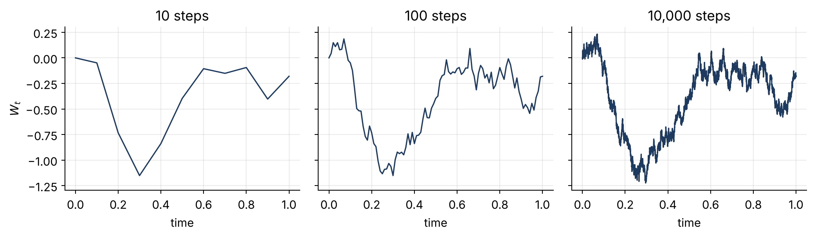
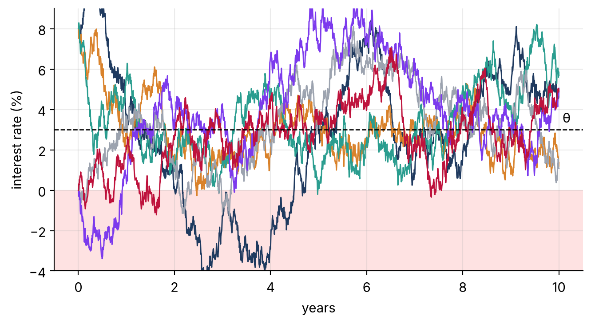
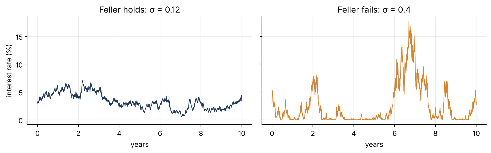
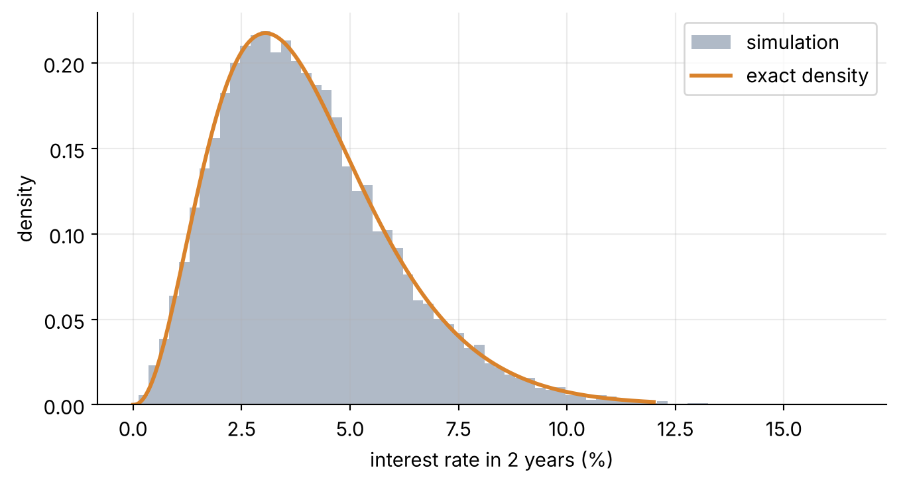

Part 1 · Building a model of interest rates, one small step at a time
stochastic processes
CIR
interest rates
We start with a coin, end with the Cox–Ingersoll–Ross model, and see why interest rates need randomness that ‘comes back home’.
Published
November 9, 2026
My research is about pricing when we are unsure of a model’s parameters. Before we can be unsure of a model, we need a model. This first post builds one of the most important models in finance, the Cox–Ingersoll–Ross (CIR) model, from scratch. Each step adds exactly one idea.
Step 1 · A coin decides where we go
Flip a fair coin. Heads: move up one step. Tails: move down one step. Repeat. This is a random walk, the simplest model of something that changes unpredictably.
Figure 1: Five random walks of 100 coin flips each. No two paths look alike, but all of them wander with no tendency to return to zero.
What to notice: the paths drift further and further from zero as time passes. Their typical distance grows like the square root of the number of flips.
Step 2 · Make the steps tiny: Brownian motion
Real prices and rates do not jump in whole units once a day. They move continuously. So we take smaller and smaller steps, more and more often, and shrink the step size like \sqrt{\Delta t} so the wiggle per unit of time stays fixed. In the limit we get Brownian motionW_t, the basic building block of stochastic calculus.
Show the code
fig, axes = plt.subplots(1, 3, figsize=(11, 3.3), sharey=True)z = rng.standard_normal(10_000)for ax, n inzip(axes, [10, 100, 10_000]): dt =1/ n incr = z[: n] * np.sqrt(dt) if n ==10_000else z.reshape(n, -1).sum(1) * np.sqrt(1/10_000) ax.plot(np.linspace(0, 1, n +1), np.r_[0, incr.cumsum()], color=NAVY, lw=1.2) ax.set_title(f"{n:,} steps"); ax.set_xlabel("time")axes[0].set_ylabel("$W_t$")plt.tight_layout(); plt.show()

Figure 2: As the step size shrinks (10, 100, then 10,000 steps over the same time interval), the random walk converges to a continuous but very rough path: Brownian motion.
In shorthand, a tiny change of Brownian motion over a tiny time dt is written dW_t. It is random, has mean zero and variance dt.
Step 3 · Interest rates come back home: mean reversion
Brownian motion is a poor model of interest rates. Rates do not wander off forever: when they are unusually high, central banks and markets push them down, and when they are low, they drift up. We add a pull toward a long-run level\theta, with strength \kappa:
This is the Vasicek model (1977). When r_t > \theta the pull is negative and drags the rate down; when r_t<\theta it pushes up.
Show the code
kappa, theta, sigma, r0, T, n =0.8, 0.03, 0.03, 0.08, 10, 2000dt = T / n; t = np.linspace(0, T, n +1)for i, c inenumerate([NAVY, ORANGE, TEAL, GREY, "#7c3aed", "#be123c"]): r = np.empty(n +1); r[0] = r0 if i <3else0.0for k inrange(n): r[k +1] = r[k] + kappa * (theta - r[k]) * dt + sigma * np.sqrt(dt) * rng.standard_normal() plt.plot(t, 100* r, color=c, lw=1.1)plt.axhline(100* theta, ls="--", color="k", lw=1); plt.text(T, 100* theta +.2, " θ", va="bottom")plt.axhspan(-10, 0, color="#fee2e2", zorder=-1); plt.ylim(-4, 9)plt.xlabel("years"); plt.ylabel("interest rate (%)"); plt.show()

Figure 3: Vasicek paths start far from the long-run level θ = 3% and are pulled back toward it. But some paths fall below zero (shaded area).
What to notice: mean reversion works, but the random shock has the same size \sigma no matter how low the rate is, so rates can go negative. For many applications (and for modelling volatility, which can never be negative) that is a problem.
Step 4 · Shrink the noise near zero: the CIR model
Cox, Ingersoll and Ross (1985) made one small change: they scaled the shock by \sqrt{r_t}.
Figure 4: CIR paths with the same κ, θ as before. The noise is large when rates are high and quiet near zero, so every path stays non-negative.
Step 5 · Can the rate touch zero? The Feller condition
Positivity has one more subtlety. If the noise \sigma is large compared with the upward pull \kappa\theta, the rate can still touch zero (and bounce back). It stays strictly positive exactly when
fig, axes = plt.subplots(1, 2, figsize=(11, 3.5), sharey=True)for ax, s, title in [(axes[0], 0.12, "Feller holds"), (axes[1], 0.40, "Feller fails")]: r = np.empty(n +1); r[0] =0.03for k inrange(n): rp =max(r[k], 0.0) r[k +1] = r[k] + kappa * (theta - rp) * dt + s * np.sqrt(rp * dt) * rng.standard_normal() ax.plot(t, 100* np.maximum(r, 0), color=NAVY if s <.2else ORANGE, lw=1) ax.set_title(f"{title}: σ = {s}"); ax.set_xlabel("years")axes[0].set_ylabel("interest rate (%)"); plt.tight_layout(); plt.show()

Figure 5: Left: Feller condition holds (2κθ = 0.048 > σ² = 0.0144); the path stays away from zero. Right: it fails (2κθ = 0.048 < σ² = 0.16); the path repeatedly hits zero.
This condition will come back in Post 2, where the parameters are uncertain and we need it to hold for every admissible parameter, not just one.
Step 6 · Checking our simulation against the exact answer
A nice feature of CIR is that we know the exact distribution of r_T: a scaled non-central chi-square. That lets us check that our simulation is right.
Show the code
kappa, theta, sigma, r0, T, n, M =0.8, 0.03, 0.12, 0.08, 2.0, 400, 20_000dt = T / n; r = np.full(M, r0)for k inrange(n): rp = np.maximum(r, 0) r = r + kappa * (theta - rp) * dt + sigma * np.sqrt(rp * dt) * rng.standard_normal(M)c = sigma**2* (1- np.exp(-kappa * T)) / (4* kappa)df, nc =4* kappa * theta / sigma**2, r0 * np.exp(-kappa * T) / cx = np.linspace(1e-5, 0.12, 400)plt.hist(100* np.maximum(r, 0), bins=70, density=True, color=NAVY, alpha=.35, label="simulation")plt.plot(100* x, stats.ncx2.pdf(x / c, df, nc) / c /100, color=ORANGE, lw=2.2, label="exact density")plt.xlabel("interest rate in 2 years (%)"); plt.ylabel("density"); plt.legend(); plt.show()

Figure 6: Histogram of 20,000 simulated CIR rates after 2 years (bars) against the exact non-central chi-square density (line). They agree.
Recap, step by step. Coin flips → Brownian motion (randomness) → Vasicek (+ pull toward a long-run level) → CIR (+ noise that fades near zero) → Feller condition (when zero is never reached).
Everything here assumed we know\kappa, \theta and \sigma. In the next post we ask what happens when we don’t, and that is where my research begins.